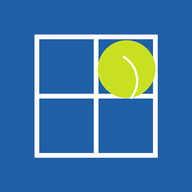

Americano
För padel-americano med 5–12 spelare. Appen lottar matchschemat, räknar tabellen medan ni spelar och ordnar slutspel. Tidigare kvällar kan sparas.
Lägg appen på hemskärmen
- iPhone/iPad: öppna appen i Safari, tryck på Dela-knappen och välj Lägg till på hemskärmen.
- Android: öppna appen i Chrome, tryck på menyn ⋮ och välj Lägg till på startskärmen.
- Appen fungerar sedan som en vanlig app, även utan internet på banan.